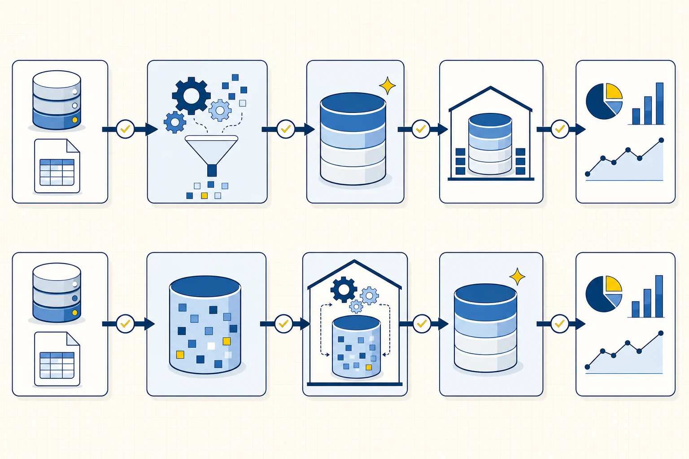

Elegir un formato también define controles
Un formato establece cómo se representan los datos cuando salen de un sistema, se guardan en un archivo o cruzan una interfaz. La elección influye en los tipos que pueden conservarse, en el espacio ocupado y en la facilidad con la que otra herramienta puede leer el contenido. Dos archivos pueden describir los mismos pedidos y, aun así, exigir controles distintos porque uno expresa su estructura de manera explícita y el otro depende de convenciones externas.
CSV representa una tabla como líneas separadas por un delimitador. Resulta fácil de abrir y transferir, pero el archivo suele decir poco acerca de los tipos, las claves o el significado de cada columna. Un separador decimal, una coma dentro de un texto o una codificación diferente pueden desplazar valores sin que el problema sea evidente a simple vista. Por eso conviene acompañarlo con un diccionario y comprobar nombres, cantidad de columnas, tipos y conteos al recibirlo.
JSON organiza la información mediante objetos, pares clave-valor y listas. Es habitual en APIs porque puede expresar estructuras jerárquicas, como un despacho que contiene varios eventos. Esa flexibilidad permite transportar respuestas complejas, aunque el análisis tabular requiere decidir qué lista se convertirá en filas y qué datos del nivel superior se repetirán en cada una.
Parquet almacena datos por columnas, conserva tipos y aplica compresión. Suele reducir el volumen leído cuando una consulta necesita pocas columnas de un conjunto grande. A cambio, requiere una herramienta para inspeccionarlo y resulta menos cómodo para una revisión manual rápida. La siguiente comparación resume diferencias operativas; la calidad final dependerá del contrato y de los controles aplicados al contenido.
| Formato | Estructura habitual | Ventaja práctica | Control que merece atención |
|---|---|---|---|
| CSV | tabla plana | intercambio simple entre herramientas | delimitador, codificación, comillas y tipos |
| JSON | objetos y listas anidadas | representa respuestas jerárquicas | nivel de registro, campos opcionales y arrays |
| Parquet | columnas tipadas y comprimidas | lectura analítica eficiente | compatibilidad de esquema y particiones |
Cómo leer la anatomía de un JSON
Consideremos una respuesta de tracking simplificada:
Qué ocurre cuando cambia el contrato de una fuente
Pregunta de lectura¿Qué cambios pueden aceptarse y cuáles deben detener la publicación?
Contrato de entrada
hash · versión · campos obligatorios · tipos · grano
Campo opcional nuevo
El núcleo requerido permanece.
Clave ausente
No puede identificar o relacionar.
Tipo incompatible
Texto donde se esperaba número.
Archivo repetido
El hash ya fue procesado.
Aceptar
Registrar versión y continuar.
Detener
Bloquear publicación y pedir corrección.
Cuarentena
Aislar archivo y conservar evidencia.
Advertir
Omitir reejecución y registrar intento.
El contrato convierte un cambio de archivo en una decisión observable. Cada clase de cambio tiene un tratamiento, una evidencia y una condición para volver al flujo.
- 01
La entrada se identifica con hash y versión; el contrato declara campos, tipos y grano.
- 02
Un campo opcional nuevo puede aceptarse si los consumidores toleran la extensión.
- 03
Una clave ausente o un tipo incompatible impiden sostener relaciones o cálculos.
- 04
Un hash repetido activa idempotencia: se registra el intento y se evita procesar dos veces.
{
"extracted_at": "2026-09-23T22:00:00Z",
"shipments": [
{
"shipment_id": "S000001",
"status": "delivered",
"events": [
{"type": "dispatched", "timestamp": "2026-09-20T12:00:00Z"}
]
}
]
}Las llaves delimitan objetos y los corchetes delimitan listas. En el nivel raíz aparecen extracted_at y shipments. El primero describe la extracción completa; el segundo contiene una lista que puede repetirse una vez por despacho. Dentro de cada despacho hay otra lista, events, con cero, uno o varios acontecimientos. Si queremos analizar el tiempo entre eventos, el grano útil será una fila por evento y shipment_id deberá repetirse para conservar el vínculo con su despacho.
Antes de normalizar conviene responder preguntas concretas: qué elemento identifica a cada despacho, qué zona horaria usan los timestamps, si el estado del nivel superior coincide con el último evento y qué significa que una clave falte. Una ausencia puede representar “todavía no ocurrió”, “el proveedor no lo informa” o “la captura falló”. Esas interpretaciones producen tratamientos diferentes y deben quedar en el contrato.
Del servicio vivo a un snapshot reproducible
Una API puede cambiar entre dos ejecuciones. También puede responder con demora, aplicar límites de consumo o quedar temporalmente inaccesible. Guardar una copia de la respuesta permite trabajar sobre una entrada estable y reconstruir qué información estaba disponible cuando se calculó un resultado. Esa copia se denomina snapshot.
El snapshot incluye el cuerpo recibido y metadatos suficientes para repetir o auditar la extracción. En el caso de tracking registraríamos la URL, los parámetros, la fecha y hora, el código HTTP, el conteo de despachos, una huella digital del archivo y la versión del proceso que lo interpretó. Si la respuesta llega paginada, también conservamos la cantidad de páginas y el criterio usado para recorrerlas.
Esta práctica separa dos problemas. Primero verificamos si la captura externa funcionó. Después evaluamos si la transformación aplicada a la copia produce la tabla esperada. Cuando un proveedor cambia una respuesta, podemos comparar snapshots y localizar la diferencia sin depender de que el servicio conserve su estado anterior.
El contrato de fuente vuelve explícitas las expectativas
Un contrato de fuente documenta qué promete el productor y qué necesita el consumidor. Puede comenzar como un archivo versionado dentro del proyecto. Lo importante es que permita distinguir un cambio aceptable de una ruptura que exige intervención.
Para la fuente de tracking, el contrato debería declarar el grano, las claves, los campos obligatorios, los tipos y unidades, la frecuencia esperada, la latencia tolerable, el responsable y las restricciones de acceso. También debe indicar cómo se comunican los cambios. Por ejemplo, agregar un campo opcional puede ser compatible; omitir shipment_id impide identificar los registros y requiere detener la publicación.
El contrato orienta tanto el código como la conversación entre áreas. Si el pipeline rechaza una respuesta por un tipo inesperado, el equipo puede mostrar qué condición se incumplió y quién debe resolverla. Sin esa referencia, una corrección rápida corre el riesgo de convertir una excepción en una regla silenciosa.
ETL y ELT ubican la transformación en momentos diferentes
ETL ordena el proceso como extracción, transformación y carga. Los datos se limpian o adaptan antes de ingresar al repositorio de consumo. Puede ser adecuado cuando el destino tiene capacidad limitada, cuando ciertos campos sensibles no deben almacenarse allí o cuando existe una transformación estable en el sistema de integración. El diseño necesita conservar una copia autorizada de la entrada si se prevé reprocesar con reglas nuevas.
ETL y ELT sobre una misma fuente de Faro Sur
Pregunta de lectura¿Dónde ocurre la transformación y qué conserva cada recorrido antes de publicar el mart?
Extraer → transformar → cargar
Fuente
Cloud Storage
Transformar
Dataflow limpia y controla
Cargar
BigQuery curado
Consumir
Power BI
Ejemplo cercano
Power Query en Excel o Power BI
Extraer → cargar → transformar
Fuente
Cloud Storage o Pub/Sub
Cargar raw
BigQuery conserva el original
Transformar
Dataform ejecuta SQL y pruebas
Publicar
marts en BigQuery
Consumir
Power BI
ETL transforma antes de cargar el conjunto analítico. ELT conserva primero una copia raw en el warehouse y transforma allí. Ambos necesitan contratos, controles y una salida curada.
Fuentes técnicas: Google Cloud · Dataflow overview, Google Cloud · Dataform overview, Microsoft Learn · ¿Qué es Power Query?.
ETL
- Fuente
- Extraer
- Transformar y controlar
- Cargar curado
- Consumir
ELT
- Fuente
- Extraer y cargar raw
- Transformar en el warehouse
- Publicar mart
- Consumir
ELT ordena extracción, carga y transformación. Primero preserva una versión cercana a la fuente y luego utiliza la capacidad del repositorio para construir tablas derivadas. Esta secuencia facilita volver a procesar datos históricos y crear nuevos productos sin solicitar otra extracción. También exige permisos, retención y controles claros, porque la zona inicial puede contener campos sucios o sensibles.
La elección depende del contexto. Un archivo con datos personales puede requerir eliminar columnas antes de llegar a un entorno compartido. Una respuesta operacional sin esos campos puede cargarse en una zona restringida y transformarse allí varias veces. En ambos casos deben conocerse la entrada, la regla, la salida y la evidencia que permite reconciliarlas.
Las capas separan responsabilidades
La capa raw conserva una copia cercana a la fuente y agrega metadatos de ingesta. Cada release permanece identificable y una corrección posterior genera una nueva versión. Esta decisión permite regresar al dato recibido y evita que una modificación silenciosa borre la causa de un problema.
Staging convierte la estructura recibida en una forma estable para trabajar. Allí se normalizan nombres y tipos, se expanden listas, se tratan duplicados técnicos y se crean indicadores de calidad. Una fila en staging debe poder rastrearse al snapshot del que provino.
El mart organiza los datos para una decisión o familia de análisis. Declara un grano, aplica reglas de negocio y ofrece métricas consistentes a SQL, Python o Power BI. Una tabla de eventos y un mart de desempeño de entregas pueden provenir del mismo snapshot, pero responden preguntas distintas y por eso tienen granos diferentes.
Cada transformación modifica estructura o significado
Las transformaciones técnicas corrigen codificación, tipos o nombres. Las estructurales convierten listas en filas, pivotan columnas o integran tablas. Las reglas de negocio derivan estados como OTIF, margen o banda de demora. Los tratamientos de calidad excluyen, marcan o corrigen observaciones según una política. Las transformaciones de seguridad reducen el acceso mediante anonimización, seudonimización o eliminación de campos.
Para revisar una transformación conviene registrar cinco datos: entrada, salida, regla, cambio de conteo y riesgo introducido. Supongamos que events se expande. El número de filas crecerá porque un despacho puede contener varios eventos; esa diferencia es esperada. Si luego elegimos el último evento por despacho, el conteo deberá volver a una fila por shipment_id. Los controles muestran por qué cambió el grano en cada paso.
Idempotencia y reejecución segura
Un proceso idempotente produce el mismo resultado cuando se ejecuta otra vez con la misma entrada y la misma versión de reglas. Esta propiedad evita que una recuperación después de un fallo duplique pedidos, eventos o importes. En un pipeline por lotes puede lograrse reemplazando la partición del período, identificando cada ingesta, deduplicando por clave y versión, o verificando la huella digital de los archivos ya procesados.
La estrategia debe verse en la evidencia. Si el archivo movimientos_2026_09.csv se recibe dos veces, el registro de ejecución puede reconocer el mismo hash y evitar una segunda carga. Si el contenido cambia con el mismo nombre, la nueva huella revela que existe otra versión y obliga a decidir cuál conservar.
Detectar un esquema cambiante
Una fuente puede agregar campos, modificar un tipo, omitir una clave o cambiar su paginación. El pipeline compara la respuesta con el contrato y clasifica el cambio. Un campo opcional nuevo puede registrarse y continuar; una clave obligatoria ausente debe detener la tabla afectada o generar una alerta antes de publicar.
La detección temprana evita que un cambio se propague hasta el reporte. Si timestamp comienza a llegar sin zona horaria, convertirlo de manera automática podría desplazar eventos y alterar la demora calculada. El control debería preservar el valor recibido, marcar la incompatibilidad y solicitar una definición antes de transformar.
Normalizar el tracking de Faro Sur
El snapshot de Faro Sur contiene despachos y eventos anidados. La primera tabla conserva una fila por despacho; la segunda expande events a una fila por acontecimiento y repite shipment_id como clave de vínculo. A partir de esa historia puede derivarse el último estado, el tiempo transcurrido entre despacho y entrega y la presencia de secuencias incompletas.
Una diferencia por transportista puede orientar una investigación operacional, aunque el registro por sí solo no identifica la causa. Distancia, disponibilidad, promesas comerciales y prácticas de captura pueden explicar parte del patrón. El análisis debe presentar la asociación observada y señalar qué información adicional permitiría evaluar una explicación.
Los archivos recurrentes forman un pipeline por lote
El caso complementario recibe cinco archivos de movimientos. Cuatro cumplen el esquema esperado y aportan 32 filas; el quinto carece de movimiento_id y queda registrado como archivo rechazado. Power Query combina los archivos válidos, conserva el nombre de origen, asigna tipos y ejecuta las mismas reglas sobre cada lote.
La secuencia comienza al conservar el adjunto y su fecha de recepción. Luego verifica nombres de columnas y tipos, anexa los archivos compatibles, deduplica por movimiento_id y versión, separa la tabla curada del registro de rechazos y reconcilia archivos, filas e importe antes de publicar. Cada estudiante o equipo puede reproducir el recorrido y explicar en qué punto se decide el destino de una observación.
Actualizar vuelve a ejecutar la consulta sobre la carpeta. El resultado puede consumirse en Excel o Power BI y sigue siendo observable cuando aparece un archivo, cambia el esquema o una fila incumple una regla. La automatización futura deberá conservar la misma evidencia aun cuando la recepción deje de ser manual.
Controles que acompañan la publicación
Los controles se eligen según el grano de cada etapa. En el JSON original contamos elementos de shipments y events. En staging verificamos claves nulas, timestamps válidos y la relación entre eventos y despachos. En el mart comprobamos que exista un único último evento por envío y reconciliamos los totales con la tabla shipments.
| Etapa | Control | Qué permite detectar |
|---|---|---|
| snapshot | código HTTP, hash y conteo | respuesta incompleta o repetida |
| staging de eventos | claves, timestamps y referencias | registros imposibles de vincular |
| último estado | una fila por shipment_id | empate o regla de orden ambigua |
| mart | conteos y métricas contra fuente | pérdida o duplicación durante el proceso |
Un control aporta valor cuando tiene umbral, responsable y acción. El conteo puede detener una publicación, producir una advertencia o documentar una diferencia esperada. Esa respuesta debe decidirse antes de que aparezca el incidente.
Preguntas de comprobación
- ¿Qué información se pierde si se conserva únicamente el mart?
- ¿Qué metadatos permiten repetir una extracción?
- ¿En qué situación transformar antes de cargar reduce un riesgo?
- ¿Qué grano tiene la tabla de eventos?
- ¿Cómo distinguir un cambio compatible de una ruptura de contrato?
- ¿Qué control demostraría que una reejecución no duplicó datos?
- ¿Cómo rastrear una fila consolidada hasta el archivo recibido?
Referencias
- DuckDB: trabajo con JSON
- JSON.org: introducción al formato
- Contrato de fuente de la materia.